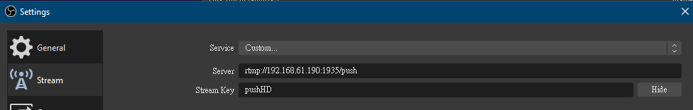

推影片串流
URL 跟用途都在 Readme.md 中
使用 OBS 作為範例
在設定面板 (Setting) -> 串流 (Stream)

伺服器 -> 位址
串流鑰匙 -> URL 最後的部分
從上面的敘述，形成完整的 URL 會成為這樣
rtmp://192.168.61.190:1935/push/pushHD
- push -> 不轉碼, 只存流
- live -> 轉所有格式
- live_t -> 轉 ts 格式
- live_m -> 轉 m4s 格式
- live_d -> 轉 dash 格式
輸出的 URL 播放會為以下
- http://192.168.61.190:80/hls/pushHD.m3u8
- http://192.168.61.190:80/mp4/pushHD.m3u8
- http://192.168.61.190:80/dash/pushHD.m3u8
如果你想要手動的轉碼，可以用 res 連結槽